<title>Tile Rework Built</title>
<meta name="claude:viewport-fit-sides" content="cover">
<link rel="preconnect" href="https://fonts.googleapis.com">
<link rel="stylesheet" href="https://fonts.googleapis.com/css2?family=Fraunces:opsz,wght@9..144,600&family=Atkinson+Hyperlegible:wght@400;700&display=swap">
<style>
  /* Layout: one reading column of short sections, each a few plain lines over its screenshots from the game. */
  :root {
    --bg: #f3f1ec; --panel: #ffffff; --fg: #1d2230; --soft: #59606f; --line: rgba(29, 34, 48, 0.14);
    --void: #0c1432; --grass: #4f7f45; --water: #2f74b5;
    --display: "Fraunces", Georgia, serif; --body: "Atkinson Hyperlegible", "Segoe UI", system-ui, sans-serif;
  }
  @media (prefers-color-scheme: dark) { :root:not([data-theme="light"]) { --bg: #0e1426; --panel: #161e36; --fg: #e9ebf2; --soft: #a3aabd; --line: rgba(233, 235, 242, 0.14); --grass: #8cc27d; --water: #7cb7ea; color-scheme: dark } }
  :root[data-theme="dark"] { --bg: #0e1426; --panel: #161e36; --fg: #e9ebf2; --soft: #a3aabd; --line: rgba(233, 235, 242, 0.14); --grass: #8cc27d; --water: #7cb7ea; color-scheme: dark }
  body { background: var(--bg); color: var(--fg); font: 16px/1.55 var(--body); padding-left: max(16px, env(safe-area-inset-left, 0px)); padding-right: max(16px, env(safe-area-inset-right, 0px)); padding-block: 28px 56px; }
  main { max-width: 860px; margin: 0 auto; display: grid; gap: 34px; }
  header { display: grid; gap: 8px; }
  h1 { font: 600 clamp(28px, 5vw, 40px)/1.1 var(--display); margin: 0; text-wrap: balance; }
  h2 { font: 600 22px/1.2 var(--display); margin: 0; text-wrap: balance; }
  p, ul { margin: 0; max-width: 65ch; }
  ul { padding-left: 1.2em; display: grid; gap: 4px; }
  .meta { color: var(--soft); font-size: 14px; }
  .version { font-size: 12px; letter-spacing: 0.06em; text-transform: uppercase; color: var(--soft); }
  section { display: grid; gap: 10px; }
  .shots { display: grid; grid-template-columns: repeat(auto-fit, minmax(260px, 1fr)); gap: 10px; }
  figure { margin: 0; display: grid; gap: 4px; min-width: 0; }
  figure img { width: 100%; height: auto; border-radius: 6px; border: 1px solid var(--line); background: var(--void); }
  figcaption { font-size: 13px; color: var(--soft); }
  .note { background: var(--panel); border: 1px solid var(--line); border-radius: 8px; padding: 14px 16px; display: grid; gap: 8px; }
  .note h2 { font-size: 18px; }
  b.g { color: var(--grass); } b.w { color: var(--water); }
</style>
<main>
  <header>
    <span class="version">M1 trial · v0.353.0 to v0.360.0 · 5 November 2026</span>
    <h1>The tile rework, built</h1>
    <p class="meta">Built from the plan we agreed this afternoon, in eight versions, from 17:20 to 18:19. The pictures are from the hidden browser, on your map.</p>
  </header>

  <section>
    <span class="version">v0.353.0 to v0.355.0</span>
    <h2>Tiles grow, fade into the void, and the lid is gone</h2>
    <p>Every base tile is a column rooted in the core. A hidden tile's top waits in the core and grows up to its height, in the same wave as before, and you ride up on it. Below 2.5 m every column fades into the sky's colour, gone at the core, 4 m down. The dark strip beside grey tiles is gone.</p>
    <div class="shots">
      <figure>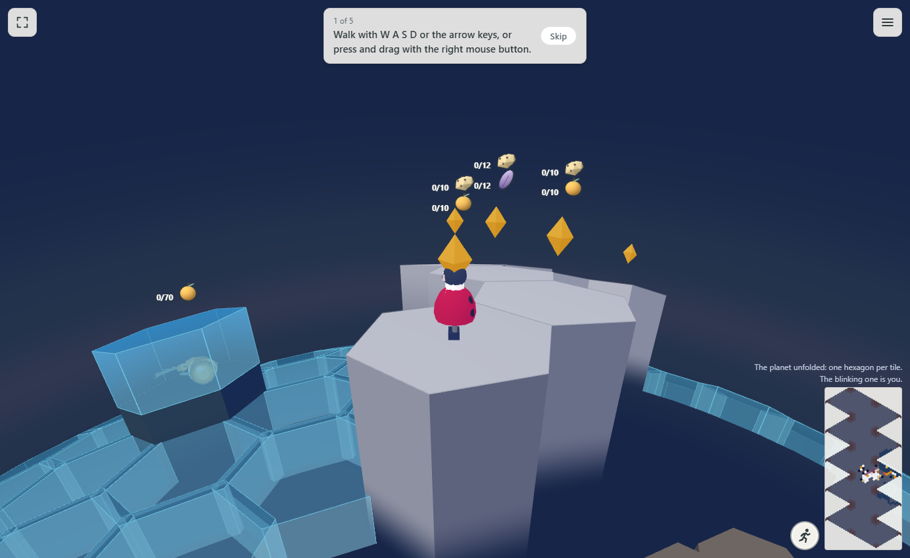<figcaption>Grey tiles at the edge, no clouds: their sides just fade.</figcaption></figure>
      <figure>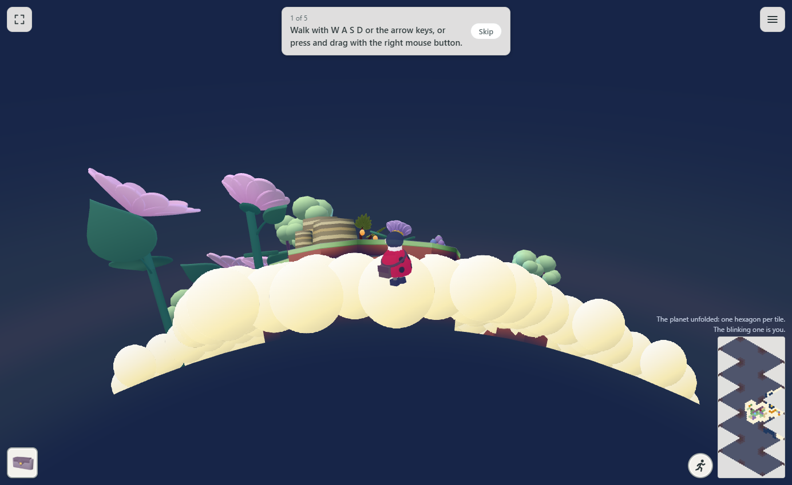<figcaption>The green island from the void: clouds, then the columns fading.</figcaption></figure>
    </div>
  </section>

  <section>
    <span class="version">v0.356.0</span>
    <h2>Every tile has a height</h2>
    <p>From 2 m down to 20 m up, in 0.5 m steps. Pick <b>Height</b> and click a tile to raise it, right-click to lower it. Click a tile with Move, and its box shows a Height slider. The map shows each raised or lowered tile's height; higher tiles are a lighter green. Your old 0.5 m, 1 m and 2 m tiles read as heights.</p>
    <div class="shots">
      <figure>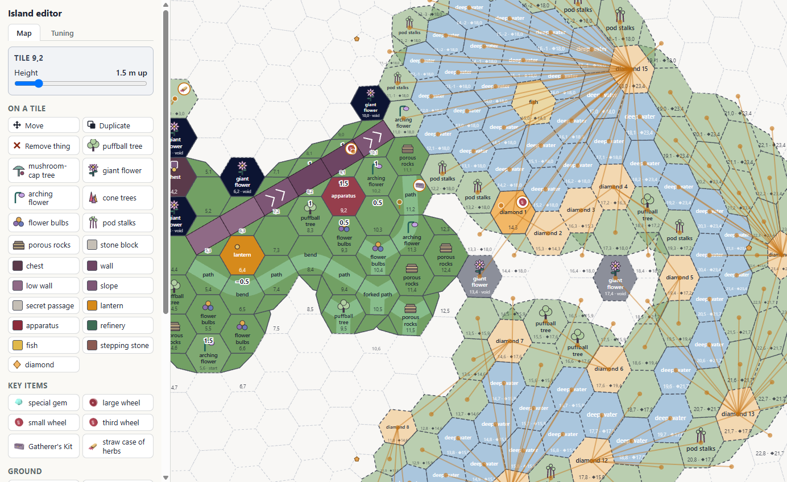<figcaption>The tile's box and the height numbers on the map.</figcaption></figure>
    </div>
  </section>

  <section>
    <span class="version">v0.357.0</span>
    <h2><b class="w">Water</b> is a tile on a base tile</h2>
    <p>A water tile's height is the pond's bed, 2 m down to start, with water up to the pond's level, 0.5 m down to start. Water tiles that touch share one level, with no face between them; a face shows wherever the water is open. Up to 0.5 m deep you walk on the bed; deeper, you swim. The water tile's box has Height (its bed) and Water level, for the whole pond.</p>
    <div class="shots">
      <figure>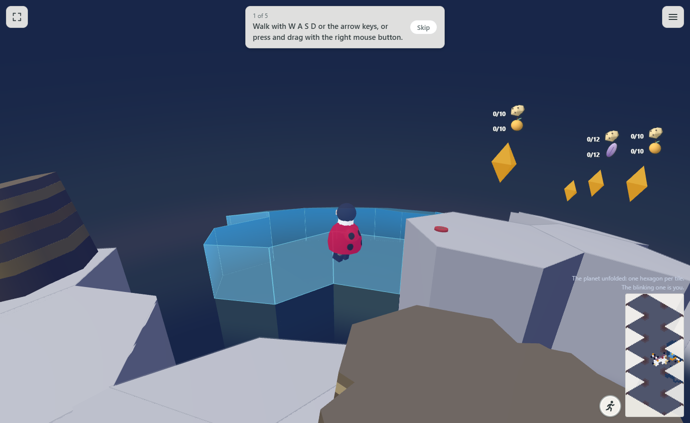<figcaption>Grey island, pond partly grown, from the bank.</figcaption></figure>
      <figure>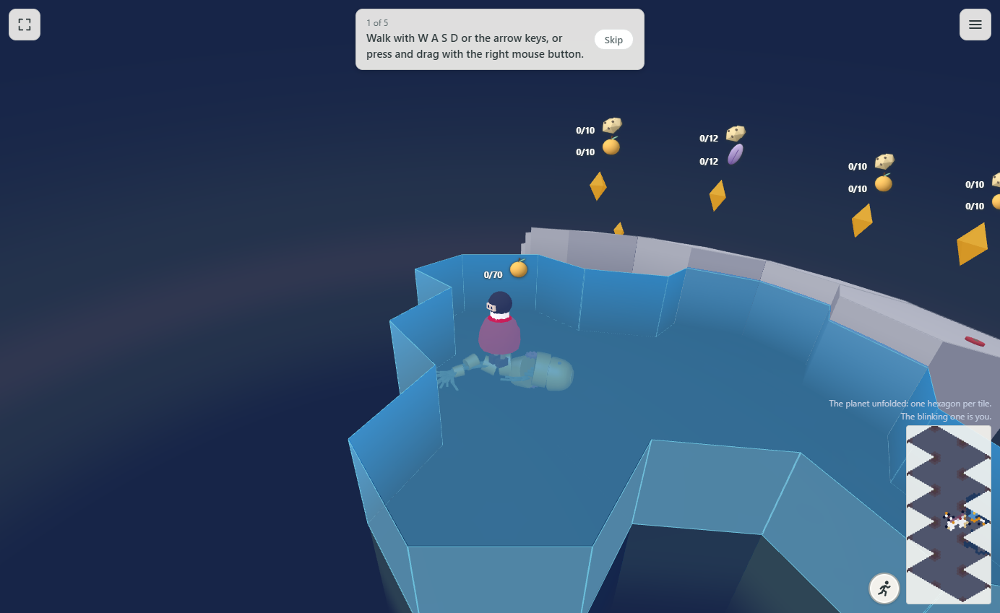<figcaption>Swimming, the Guardian on the bed below.</figcaption></figure>
      <figure>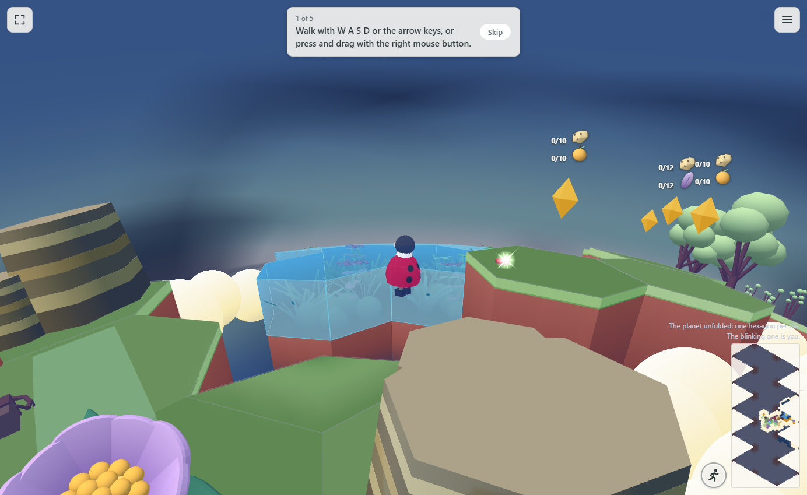<figcaption>After the lantern wakes, by day.</figcaption></figure>
    </div>
  </section>

  <section>
    <span class="version">v0.358.0 and v0.359.0</span>
    <h2>Corner pieces are columns, and clouds hug the <b class="g">grass</b></h2>
    <p>Corner pieces are wedge-shaped columns that grow and fade as tiles do. Clouds lie only round the outer edges of grass tiles: none round unhappy tiles, none by water. Their height is the <b>Clouds' tops</b> slider under Tiles, 0.8 m below the ground, for you to set.</p>
    <div class="shots">
      <figure>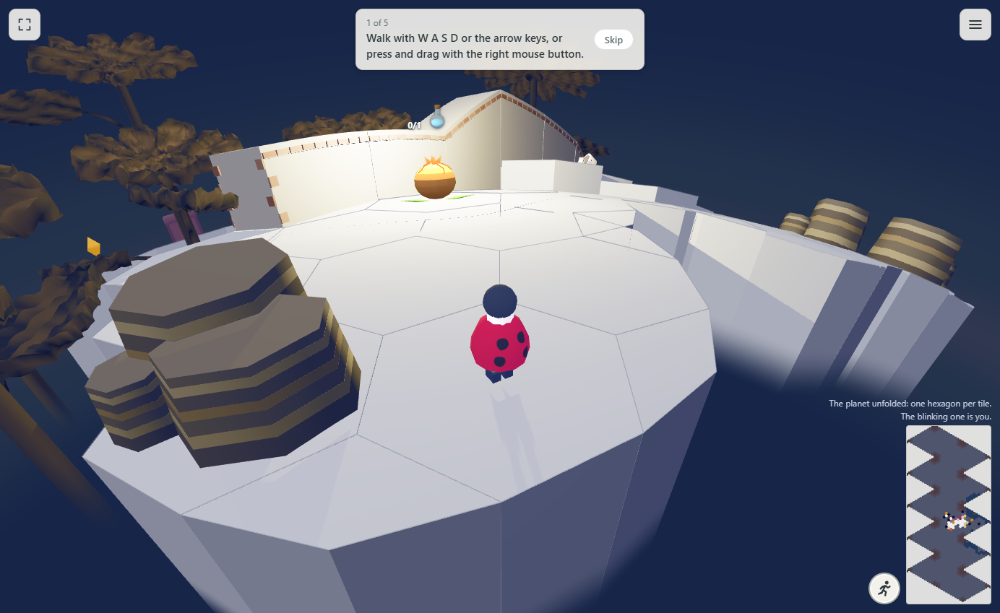<figcaption>Corner pieces as columns, at the right.</figcaption></figure>
      <figure>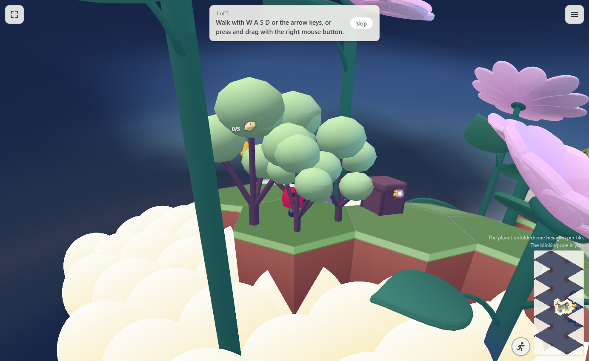<figcaption>Clouds by the green edge.</figcaption></figure>
    </div>
  </section>

  <section>
    <span class="version">v0.360.0</span>
    <h2>Floating tiles, built in the editor</h2>
    <p>The <b>Layer</b> row at the top: Ground, each layer by its height, and + Add. With a layer picked, <b>Floating tiles</b> adds or takes away one with a click, <b>Layer at</b> moves the whole layer, and every tool works on that layer. A floating tile's bottom is at its layer, and Height sets how tall it is. They are unhappy, then grass, at the same moment as the ground. Plants, rocks, chests, stone blocks, walls, machines, lanterns and diamonds stand on them; key items lie on them as before.</p>
    <div class="shots">
      <figure>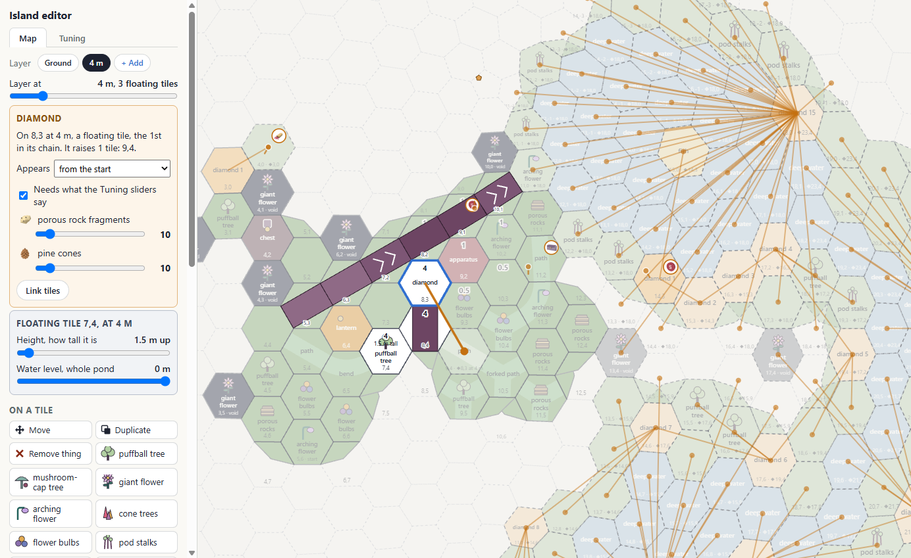<figcaption>The 4 m layer: a tree, a wall and a diamond linked to a ground tile.</figcaption></figure>
      <figure>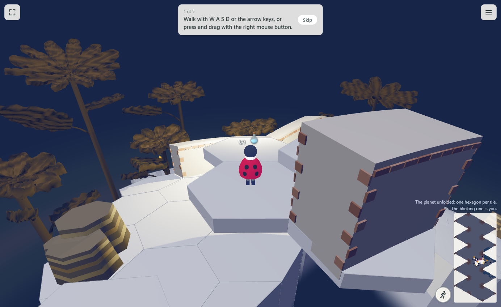<figcaption>Unhappy floating tiles, before the lantern.</figcaption></figure>
      <figure>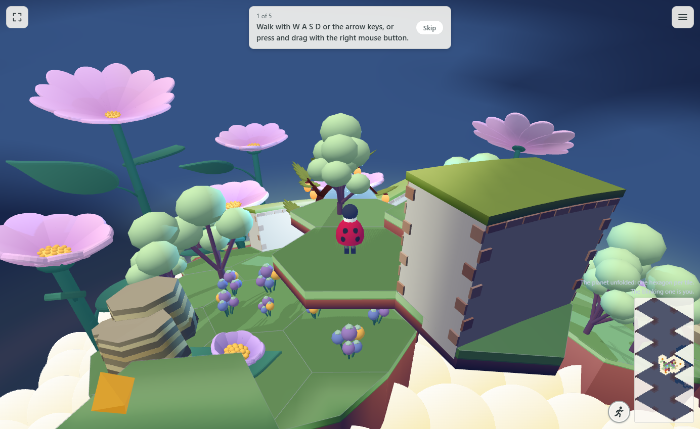<figcaption>The same tiles as grass, a puffball tree growing.</figcaption></figure>
    </div>
  </section>

  <div class="note">
    <h2>What I took as yes, and what isn't done</h2>
    <ul>
      <li>Q8: I took your "the last image you gave is correct" as yes to water tiles that touch sharing one level.</li>
      <li>Giant and arching flowers can't stand on floating tiles yet: their settings belong to a place on the ground.</li>
      <li>A stone block on a floating tile can't be pushed: blocks move only along the ground's tiles.</li>
      <li>Your map's heights and water stay as they were until you save it in the editor, so Update M1 testing keeps your map there as it is.</li>
    </ul>
  </div>
</main>
